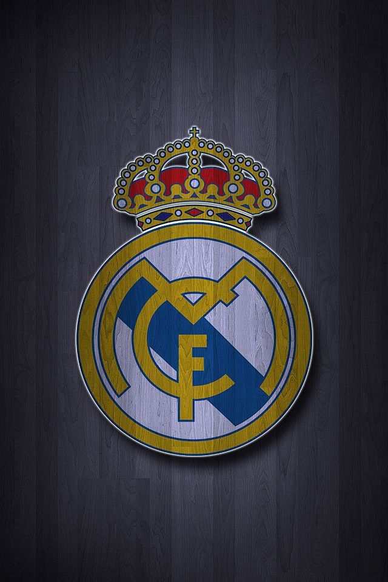

REAL MADRID FC

ABOUT THE CLUB
- Real Madrid Club de, commonly referred to as Real Madrid, is a Spanish professional football club based in Madrid. The club competes in La Liga, the top tier of Spanish football.
Founded in 1902 as Madrid Football Club, the club has traditionally worn a white home kit since its inception. The honorific title real is Spanish for "royal" and was bestowed to the club by King Alfonso XIII in 1920 together with the royal crown in the emblem. Real Madrid have played their home matches in the 85,000-capacity Santiago Bernabéu in central Madrid since 1947.
Unlike most European sporting entities, Real Madrid's members (socios) have owned and operated the club throughout its history.
The official Madrid anthem is the "Hala Madrid y nada más", written by RedOne and Manuel Jabois.The club is one of the most widely supported in the world, and is the most followed football club on social media according to the CIES Football Observatory as of 2023 and was estimated to be worth $6.6 billion in 2024, making it the world's most valuable football club.In 2024, it was the highest-earning football club in the world, with an annual revenue of €831.4 million.
TROPHY CABINET
- In domestic football, the club has won 71 trophies; a record 36 La Liga titles, 20 Copa del Rey, 13 Supercopa de España, a Copa Eva Duarte and a Copa de la Liga.In International football, Real Madrid have won a record 33 trophies: a record 15 European Cup/UEFA Champions League titles, a joint record five UEFA Super Cups, two UEFA Cups, a joint record two Latin Cups, a record one Iberoamerican Cup, and a record eight FIFA Club World championships.
Madrid was ranked first in the International Federation of Football History & Statistics Club World Ranking for 2000, 2002, 2014, 2017.In UEFA, Madrid ranks first in the all-time club ranking.
 PAPA PEREZ with UCL trophies
PAPA PEREZ with UCL trophies
THE STADIUM(Santiago Bernabéu)
-
Santiago Bernabéu Stadium (Spanish: Estadio Santiago Bernabéu)is a football stadium in Madrid, Spain. With a seating capacity of 80,000,the stadium has the second-largest seating capacity for a football stadium in Spain.It has been the home stadium of Real Madrid since its completion in 1947.
Named after footballer and legendary Real Madrid president Santiago Bernabéu (1895–1978), the stadium is one of the world's most famous football venues. It has hosted the final of the European Cup/UEFA Champions League on four occasions: in 1957, 1969, 1980, 2010.The stadium also hosted the second leg of the 2018 Copa Libertadores Finals, making Santiago Bernabéu the first (and only) stadium to host the two most important premier continental cup finals (UEFA Champions League and Copa Libertadores).
The final matches for the 1964 European Nations' Cup and the 1982 FIFA World Cup were also held at the Bernabéu, making it the first stadium in Europe to host both a UEFA Euro final and a FIFA World Cup final.

LEGENDS OF THE CLUB
| Player Name |
Goals/Assists |
Trophies |
Years in Club |
| Cristiano Ronaldo |
450/131 |
16 |
9 Seasons |
| Sergio Ramos |
101/40 |
22 |
16 Seasons |
| Luka Modric |
39/86 |
26 |
12 Seasons |
| Toni Kroos |
28/98 |
20 |
10 Seasons |
| Benzama |
354/165 |
25 |
14 Seasons |